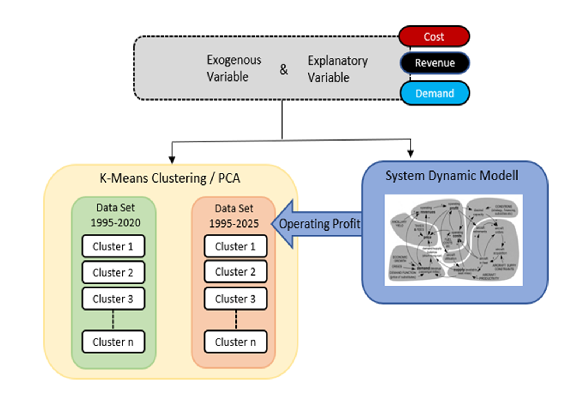
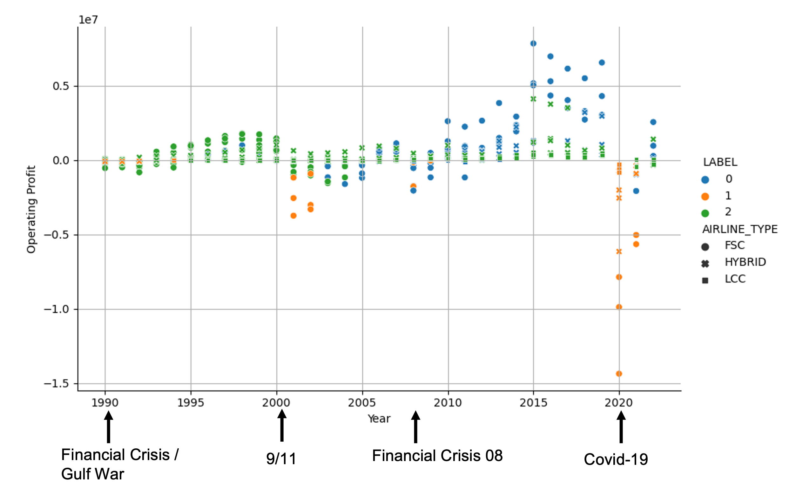

 Figure 1: Conceptual model of the airline profit simulation and the subsequent clustering/PCA approach.
The airline industry exhibits strongly cyclical behaviour, bringing both high profits but also huge losses with a period of about 10 years. The causes and effects are studied using a wide range of statistical techniques, machine learning and simulation methods.
Profit fluctuations are primarily caused by a variety of endogenous and exogenous factors that exert the strong competitive pressure on airlines. Airlines are interested in recognizing the time of expected declines in order to choose the right strategy within their business environments.
For conference participation and journal publication, system dynamics models were used to represent internal mechanisms, simulate and predict the profit cycles. The subsequent research included regression analysis, PCA and clustering approaches to investigate these internal mechanisms and analyse changes over time.
 Figure 2: The profit cycles of different US airlines, including their business models and their clustering into green (cost-efficient operation), blue (cost-inefficient operation) and orange (crisis mode) groups.
Currently, the different business models and their changes over the past 30 years are also being examined in order to better classify individual airlines in their industrial context. In the future, not only industry-specific endogenous variables, but above all macroeconomic KPIs are to be used so that changes and the identification of the right strategy can happen even earlier. The research group is increasingly focusing on the application of existing machine learning methods as well as the development of new techniques and approaches.